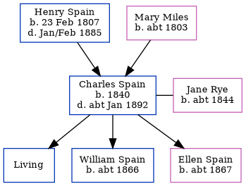

Charles Henry Spain 1840 - c1892
[ Home ] | [ Calendar ] | [ Surnames Index ] | [ Family History ]The child of Henry Spain and Mary MilesCharles Spain, the first cousin three-times-removed on the father's side of Nigel Horne, was born in St Nicholas-at-Wade, Kent, England in 18401, was baptized there on Aug 9, 1840 and married Jane Rye (with whom he had 3 children: Henry Charles, William and Ellen, along with 1 surviving child) in Bridge, Kent, England around Nov 18633. Like his father, he was an agricultural laborer. On Mar 30, 1851, he lived at his birthplace5.
He died c. Jan 1892 in Thanet, Kent, England2 and was buried at St Mary the Virgin Church, Minster in Thanet on Jan 30, 18924.
Parents
- Henry was born on Feb 23, 1807
- Mary was born c. 1803
Children
- William was born c. 1866
- Ellen was born c. 1867
Citations
- Kent, Canterbury Archdeaconry Burials - Findmypast
- England & Wales deaths 1837-2007 - Findmypast
- England & Wales Marriages 1837-2005 - Findmypast
- Kent, Canterbury Archdeaconry Burials - Findmypast
- 1851 England, Wales & Scotland Census - Findmypast (was age 11 and the son of the head of the household)
Media
England & Wales deaths 1837-2007 - BMD/D/1892/1/AZ/000439/263
Kent, Canterbury Archdeaconry burials - GBPRS/CANT/D/95349554
England & Wales marriages 1837-2005 - BMD/M/1863/4/AZ/002141/017
Family Tree
Generated by ged2site. Last updated on Nov 13, 2024